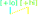
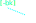

(Turkic) Vowel Harmony is not an analytically unifiable phenomenon
Jonathan North Washington
Swarthmore College
Swarthmore College
Tu+8, 2023-03-05

Overview
My talk in a nutshell
Turkic VH comprises
≥4 distinct phenomena,
which require
different analytical mechanisms.
These phenomena are related to one another as different levels of grammaticalisation.
The next ~18 minutes:
- Previous approaches to VH
- My proposal
- Grammaticality cline
- A close look at each type of VH
- A lot of Turkic VH patterns
- A clarification of my position
Background
Vowel harmony (VH), briefly
A vowel's quality is impacted by content which is not immediately adjacent
Claims of previous approahces
- Inherent correlation of phonetics & phonology (Kaun 2004, Smith 2018)
- E.g., rounding harmony involves continue rounding of the lips
- Sensitive to phonological considerations [alone] (van der Hulst 2018)
- I.e., it's all an abstract system—no need to consider phonetics
- "[Lack of correspondence with phonetic considerations is not surprising]" (Nevins & Vaux 2006)
- Non-iterative VH processes are unexpected (McCollum & Kavitskaya 2022)
- Iterative VH processes are default (somehow?)
My claim
None of this are wrong, all of this happens
Vowel Harmony Phenomena
- Attested at various points of grammaticalisation:
PhoneticsPhonologyMorphologycoarticulation assimilation underspecification lexicalised trigger - Crucially:
- VH originates in coarticulation
- VH can (/does) become dissociated from phonetic basis
- may phonologise as assimilation process
- may further phonologise as underspecification
- trigger features may become lexicalised
- At least 4 different types of thing being called "vowel harmony"
- Accounts for conflicting stories
Vowel Harmony Phenomena
- grammaticalisation cline:
- In more detail:
- Rest of talk: showing how these are different from one another
Phonetics
Phonology
Morphology
coarticulation assimilation underspecification lexicalised trigger
| VH phenomenon | area of grammar | extent | nature of phonetic target |
|---|---|---|---|
| coarticulation | phonetics* | limited & variable | target not hit |
| assimilation | phonology | limited iterativity | potentially non-canonical target created |
| underspecification | phonology | unlimited iterativity | canonical target created |
| lexicalised trigger | lexicon | N/A | N/A |
coarticulation
assimilation
underspecification
lexicalised trigger
assimilation
underspecification
lexicalised trigger
Underspecification
- Most broadly documented Turkic VH phenomenon
| Tuvan anteriority harmony (Исхаков & Пальмбах, 1961) | ||||
|---|---|---|---|---|
|
/teve-dA/
| [teveˈde] | |||
| /xɑjɑ-dA/ | [xɑjɑˈdɑ] | |||
Basic patterns of Turkic VH
- Iterative, perseverative anteriority harmony
Tuvan anteriority harmony (Исхаков & Пальмбах, 1961) UR SR gloss /teve-dA/ [teveˈde] camel- loc /xɑjɑ-dA/ [xɑjɑˈdɑ] cliff- loc - Iterative/non-iterative, persaverative rounding harmony
Spoken Turkmen rounding harmony (Clark, 1998; etc.) stem gloss -/(I)ŋ/ poss.2sg -/dA/ loc /ɡɯːð/ daughter [ɡɯːðɯŋ] [ɡɯːðdɑ] /pʊl/ money [pʊlʊŋ] [pʊldo] - Non-iterative anticipatory umlaut (raising, fronting)
Uyghur rounding harmony (Clark, 1998; etc.) UR SR gloss /bær-(ɨ)ʃ-GA/ [beɾɨʃˈkæ] give- vn -dat /bɑr-(ɨ)ʃ-GA/ [beɾɨʃˈqɑ] go- vn -dat
Involvement of consonants in VH
| Kyrgyz: dorsal stops targets of anteriority harmony | |||
|---|---|---|---|
| UR | SR | gloss | |
| /it-GA/ | [itˈkʰe] | ||
| /ɑt-GA/ | [ɑtˈqʰɑ] | ||
| /ʤem-GA/ | [ʤemˈɡe] | ||
| /ɑsmɑn-GA/ | [ɑsmɑɴˈɢɑ] | ||
| Kyrgyz: dorsal fricatives, dorsal nasals, and laterals targets of anteriority harmony | ||||
|---|---|---|---|---|
| stem | gloss | -/GA/ | -/lAr-(I)ŋ/ | |
| /ɑlmɑ/ | [ɑɫmɑˈʁɑ] | [ɑɫmɑɫɑˈɾɯɴ] | ||
| /tizme/ | [tʰizmeˈɣe] | [tʰizmeleˈɾiŋ] | ||
Are these C pairs allophones then?
- loanwords: [ɑrɑˈket]
effort , [ɡɑɫstuk]tie - compounds: [beɣɑˈjɯm]
Begayim (name) , [bɑʁeˈlek]pant bottoms
How many consonants are affected?
All of them? All involving the tongue?
All of them? All involving the tongue?
coarticulation
assimilation
underspecification
lexicalised trigger
assimilation
underspecification
lexicalised trigger
Underspecification
- Vast range of underspecified vowels
| Kyrgyz (a-l), Chuvash (m-n): (backness)-underspecified vowels | ||||
|---|---|---|---|---|
| UR | SR | gloss | specification | |
| /kel-dI/ | [kelˈdi] | I = [+high] | ||
| /qɑl-dI/ | [qʰɑɫˈdɯ] | |||
| /kel-GAn/ | [kelˈɣen] | A = [−high] | ||
| /qɑl-GAn/ | [qʰɑɫˈʁɑn] | |||
| /kel-ʧU/ | [kelˈʧy] | U = [+high,+round] | ||
| /qɑl-ʧU/ | [qʰɑɫˈʧu] | |||
| /kel-Uː/ | [keˈlyː] | Uː = [+high,+round,+long] | ||
| /qɑl-Uː/ | [qʰɑˈɫuː] | |||
| /kel-Aːr/ | [keˈleːɾ] | Aː = [−high,+long] | ||
| /qɑl-Aːr/ | [qʰɑˈɫɑːr] | |||
| /beʃ-Oː/ | [beˈʃøː] | Oː = [−high,+round,+long] | ||
| /ɑltɯ-Oː/ | [ɑɫˈtoː] | |||
| /pul-At-Əp/ | [puˈɫɑdəp] | Ə = [∅]? | ||
| /pyl-At-Əp/ | [pyˈlʲedɘp] | |||
- (This is just a taste of the possibilities...)
coarticulation
assimilation
underspecification
lexicalised trigger
assimilation
underspecification
lexicalised trigger
Underspecification
- Straightforward way of explaining various phenomena
| Underspecified Vs contrast with fully specified Vs cf. "opaque" /i/ vs. harmonising /I/ (Turkish) | |||
|---|---|---|---|
| /jɑz-(j)Abil-(j)AʤAk-sIn/ | [jɑzɑbilɛˈʤɛkʲsin] | ||
| /jɑz-dI-n/ | [jɑzdɯn] | ||
| Vowels that respond to rounding harmony in different ways cf. /I/ (no rounding specification), /Y/ [-round], /U/ [+round] (Southern Altay) | |||
|---|---|---|---|
| /bol-(I)p/ | [boɫup] | ||
| /bus-(I)l/ | [buzul] | ||
| /ɟol-nYŋ/ | [ɟoɫdɯɴ] | ||
| /kyj-dY/ | [kyjdi] | ||
| /ʧɯdɑɫ-LU/ | [ʧɯdɑɫdu] | ||
| /til-LU/ | [tildy] | ||
coarticulation
assimilation
underspecification
lexicalised trigger
assimilation
underspecification
lexicalised trigger
Underspecification
- Vowel produced is otherwise a normal phonetic target
- Realisation of harmonising vowel dependent on inventory;
e.g., /A/ as [ɑ] ~ [æ]tat , [ɛ]tur , [e]kir , [ʲe]chv , [i͜ɘ]kaz , [i]ybe , [ə]fyg - Underspecified Vs participate in same phonological processes as non-harmonising Vs
Standard Turkish lowering (a-b) and umlaut/raising (e-f)
(Göksel and Kerslake 2005; Kornfilt 1997; own phonetic work [down])UR SR gloss /jɛr/ [jæɾ̞̊] place /ʤɛp-lAr/ [ʤɛpˈlæɾ̞̊] pocket- pl /jɛr-(j)A/ [jɛˈɾɛ] place- dat /ʤɛp-lAr-(j)A/ [ʤɛplɛˈɾɛ] pocket- pl-dat /jɛr-(s)I/ [jeˈɾi] place- poss.3 /ʤɛp-lAr-(s)I/ [ʤɛpleˈɾi] pocket- pl-poss.3 - ⇒ Underspecified V always realised as expected for V not involved in VH
Standard Turkish umlaut and lowering
Recordings of P09, see Washington (2016, 2019) for experimental details
coarticulation
assimilation
underspecification
lexicalised trigger
assimilation
underspecification
lexicalised trigger
Underspecification
- Realisation of underspecified Vs abstracted from phonetics
- 8-vowel systems like Turkish (Lewis 1967, Kornfilt 1997, Göksel & Kerslake 2005)
- Phonologically:
[-bk] [+bk] [-rd] [+rd] [-rd] [+rd] [+hi] i y ɯ u [-hi] e ø ɑ o - Phonetically:
- 3 vowel heights
- /ɯ/ phonetically non-high


coarticulation
assimilation
underspecification
lexicalised trigger
assimilation
underspecification
lexicalised trigger
Underspecification
- Iterativity is just a series of underspecified Vs occurring in sequence
| Tuvan anteriority harmony (Исхаков & Пальмбах, 1961) | ||||
|---|---|---|---|---|
|
/teve-lAr-(I)m-dA/
| [tevelerimˈde] | |||
coarticulation
assimilation
underspecification
lexicalised trigger
assimilation
underspecification
lexicalised trigger
Phonological assimilation
- Assimilation VH does not rely on underspecification
- More limited capacity for iteration
| Central Crimean Tatar: rounding harmony limited to first two syllables of word (McCollum & Kavitskaya, 2022) | ||||
|---|---|---|---|---|
|
/qur–dI–ŋIz/
| [qurduŋɯz] | (*[qurduŋuz]) | ||
| Standard Turkish umlaut: limited to one syllable (own phonetic work [down]) | ||||
|---|---|---|---|---|
|

/jɛɾ-(s)I/
| [jeɾi] | |||
- New vowel target (as with underspecification)
- New vowel target is non-canonical
- Modeled as long-distance assimilation, no reference to underspecification
- Intersection or delinking of features
- Non-iterative by default!
Standard Turkish umlaut and lowering
Recordings of P09, see Washington (2016, 2019) for experimental details
More rounding harmony patterns at different levels of grammaticalisation
| Qaraqalpaq: variation in iterativity of RH (Menges, 1947) | |||
|---|---|---|---|
| UR | SR | gloss | |
| /øt-kAr-Á-dI/ | [øtkøˈrødɪ]~ [øtkøˈredɪ] | ||
| Kazakh: variation in iterativity of RH, span associated with duration of C (McCollum, 2015a) — beginning of grammaticalisation of coarticulation to assimilation? | ||||
|---|---|---|---|---|
| /qʊr-(I)l-(I)p/ | [qʰʊɾʊˈɫʊp]~[qʰʊɾʊˈɫəp]~[qʰʊɾəˈɫəp] | |||
| /qʊs-(I)p/ | [qʰʊˈsəp] | (*[qʰʊˈsʊp]) | ||
| Central Crimean Tatar: rounding harmony limited to first two syllables of word (more forms) (Kavitskaya, 2013; McCollum & Kavitskaya, 2022) | ||||
|---|---|---|---|---|
| /dost-(I)m/ | [dostum] | |||
| /tuzluq-(I)m/ | [tuzluʁɯm] | (*[tuzluʁum]) | ||
coarticulation
assimilation
underspecification
lexicalised trigger
assimilation
underspecification
lexicalised trigger
Coarticulation
- Phonetic* effect
- Variable/inconsistent V(/C) qualities produced
- Inconsistent extent of spread
- No new V(/C) target—instead, articulation steered from existing target
| Kyrgyz: intervening anterior Cs trigger fronted posterior Vs (own field work and pilot experiments) | ||||
|---|---|---|---|---|
| UR | SR | gloss | ||
| /toq-nIKI/ | [toqtuqu] | |
||
| /tok-nIKI/ | [toktük̠ü]~[toktüqu] | |||
| /sok-(s)I/ | [soɣü] | (*[soʁu]) | ||
| /toqoj-LUː/ | [toqojlüː]~[toqojlü͜u] | (*[toqojɫuː]) | |
|
coarticulation
assimilation
underspecification
lexicalised trigger
assimilation
underspecification
lexicalised trigger
Coarticulation
- Gets grammaticalised as assimilation
| Turkish (Celements & Sezer, 1982) | ||||
|---|---|---|---|---|
| /idrɑːkʲ-(s)I(n)-dA/ | [idrɑːkʲinˈdɛ] | (*[idrɑːkʲɯndɑ]) | ||
| /golf-(s)I(n)-dA/ | [golfynˈdɛ] | (*[ɡoɫfundɑ]) | ||
| Kazakh, with variation (own field work, corpus searches) | /bank-dA/ | [bɑŋkˈti͜ɘ] | (~[bɑŋkˈtɑ]) | |
|---|---|---|---|---|
| /rulʲ-nIŋ/ | [rulʲˈdɘŋ] | (~[rulʲˈdəɴ]) | ||
- Coarticulation ultimate origin of all VH phenomena?
coarticulation
assimilation
underspecification
lexicalised trigger
assimilation
underspecification
lexicalised trigger
Coarticulation
| Kyrgyz: intervening anterior Cs trigger fronted posterior Vs (own field work and pilot experiments) | ||||
|---|---|---|---|---|
| UR | SR | gloss | ||
| /toq-nIKI/ | [toqtuqu] | |
||
| /tok-nIKI/ | [toktük̠ü]~[toktüqu] | |||
| /sok-(s)I/ | [soɣü] | (*[soʁu]) | ||
| /toqoj-LUː/ | [toqojlüː]~[toqojlü͜u] | (*[toqojɫuː]) | |
|
- Not really spreading, how to implement?
- * "It's just phonetics" ... but how?
- "Phonology-like" patterns, but phonological targets already established
- Second level of phonology?
| lexical | /tok-nIKI/ |
|---|---|
| PHONOLOGY | |
| targets | |toktuqu| |
| "PHONETICS" (or ..?) | |
| lexical | [toktük̠ü]~[toktüqu] |
coarticulation
assimilation
underspecification
lexicalised trigger
assimilation
underspecification
lexicalised trigger
Extra-phonological patterns
- Morpheme triggers VH in a way not derivable from phonological form
- Implementable via floating feature
| Western Yugur: sporadic anteriority changes, harmony per etymology (Roos, 2000) | |||||
|---|---|---|---|---|---|
| UR | SR | gloss | |||
|

/un-GA/ | [unki] | (*[unqɑ]) | ← *yn | ||
| /pɯl-GA/ | [pɯlɣi] | (*[pɯlɣɑ]) | ← *bil | ||
| /jy-GA/ | [jyɣɑ] | (*[jyɣi]) | ← *ju | ||
| /jiɣ-GA/ | [jiqqɑ] | (*[jikki]) | ← *jɯɣ | ||
| Kazakh & Kyrgyz: *qɑj~qɑn + *et- | ||||||
|---|---|---|---|---|---|---|
| stem | -/GAn/ | -/Á-sIŋ/ | ||||
| /qɑjt/ | [qʰɑjtˈkʰi͜ɘn] | (*[qʰɑjtˈqʰɑn]) | [qʰɑjˈtʰi͜ɘsɘŋ] | (*[qʰɑjˈtʰɑsəɴ]) | ||
| /qɑnt/ | [qʰɑntˈkʰen] | (*[qʰɑntˈqʰɑn]) | [qʰɑnˈtʰesiŋ] | (*[qʰɑnˈtʰɑsɯɴ]) | ||
Summary
- Grammaticalisation trajectory of VH
- VH has origins in phonetics
- Some VH patterns are still "phonetic", some are "phonological"
- Different types of phonological mechanisms required
- Underspecification
- Unlinking, linking of multiple features
- VH targets can find their way into the lexicon (a kind of "overspecification")
- A "phonology-like phonetics", a second level of phonology
Thank you!
Thanks also to: one anonymous participant, two anonymous reviewers for Tu+8, various reviewers and the editors of the OUP Handbook on vowel harmony, IU University Graduate School Grant-in-Aid of Doctoral Research, Swarthmore Faculty Research Funding
Appendices
Historical fronting to [æ]
| Kazakh: fronting between palatals (field work) | ||||
|---|---|---|---|---|
| UR | SR | gloss | ||
| /ʃɑʃ-GA/ | [ʃæʃˈqʰɑ] | (*[ʃɑʃˈqʰɑ], *[ʃæʃˈkʰi͜ɘ]) | ||
| /ʃɑʃ-(I)m/ | [ʃæˈʃəm] | (*[ʃɑˈʃəm], *[ʃæˈʃɘm]) | ||
- UR is VH trigger?
- Alternatively: [æ] is not "front" in correct anteriority dimension
cf. Nevins and Vaux (2006) on /j/
| Tatar: grammaticalised fronting between palatals (field work, corpus searches) | ||||
|---|---|---|---|---|
| /ɕæɕ-GA/ | [ɕæɕˈkʰæ] | (*[ɕæɕˈqʰɑ]) | ||
| /ɕæɕ-(I)m/ | [ɕæˈɕɘm] | (*[ɕæˈɕəm]) | ||
Secondary fronting phenomena
- Kazakh, e.g. /ʃɑʃ-NI/ → [ʃæʃtə] 'hair-ACC', /ʒɑj/ → [ʒæj] 'slow'
- cf., Tatar /ɕæɕ-NI/ → [ɕæɕnɘ] 'hair-ACC'
Kazakh [æ]
- Anterior root to vowel harmony when not stem-final:
e.g. /æn-GA/ [æŋɡiɘ] 'song-DAT' - Posterior root to vowel harmony when not stem-final:
e.g. /kʉnæ-GA/ [kʉnæʁɑ] 'guilt-DAT' - Tongue root posterior, tongue body anterior?